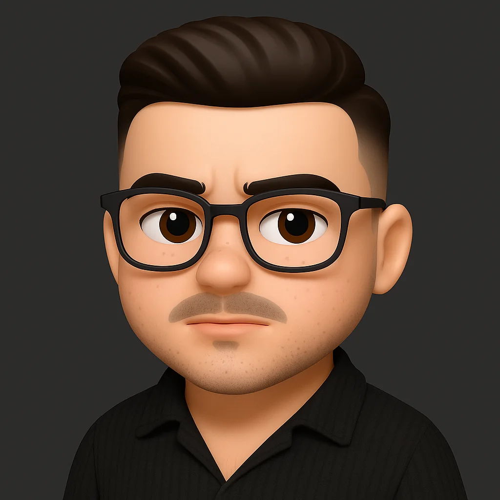

Desenvolvimento
Aplicações e experiências web com HTML, CSS, JavaScript, C# e C.
A estudar e a construir em Chaves, Portugal
Estudante de Informática no IPB, com experiência em desenvolvimento de software, sistemas e suporte técnico. Gosto de perceber como as coisas funcionam — e de as fazer funcionar melhor.

Um pouco sobre mim
Estou a frequentar o CTeSP em Informática no Instituto Politécnico de Bragança. A minha formação combina programação, desenvolvimento web e móvel, redes, sistemas operativos e manutenção de hardware.
Trabalho com C, C#, JavaScript e tecnologias web. Também uso Windows e Linux no dia a dia e integro ferramentas de IA no meu fluxo de trabalho para pesquisar, aprender e iterar com mais eficiência.
Ver o meu percursoÁreas de interesse
Aplicações e experiências web com HTML, CSS, JavaScript, C# e C.
Configuração de Windows e Linux, redes locais e infraestrutura informática.
Diagnóstico, manutenção e resolução de problemas de hardware e software.
Trabalho recente

Trainer para o modo História offline, com menu F7 e opções para jogador, armas, veículos e mundo.
Ver projetoVamos conversar?